Gradiente descendente¶
El método del gradiente descendente (Gradient Descent) es un algoritmo de optimización capaz de minimizar la función de costo. Este algoritmo trabaja de forma iterativa y en cada paso ajusta los parámetros.
El Gradient Descent mide el gradiente local de la función de costos (que podría ser el MSE) con respecto al vector de parámetros y se de forma iterativa va en la dirección del gradiente descendente (dirección opuesta del gradiente). Cuando el gradiente es cero, posiblemente se ha logrado descender en la función hasta llegar al mínimo global.
Este método comienza con unos valores aleatorios para los parámetros, luego los mejora gradualmente, dando un pequeño paso a la vez, en cada paso intenta disminuir la función de costo (descender en la función), por último, el algoritmo converge en el mínimo.
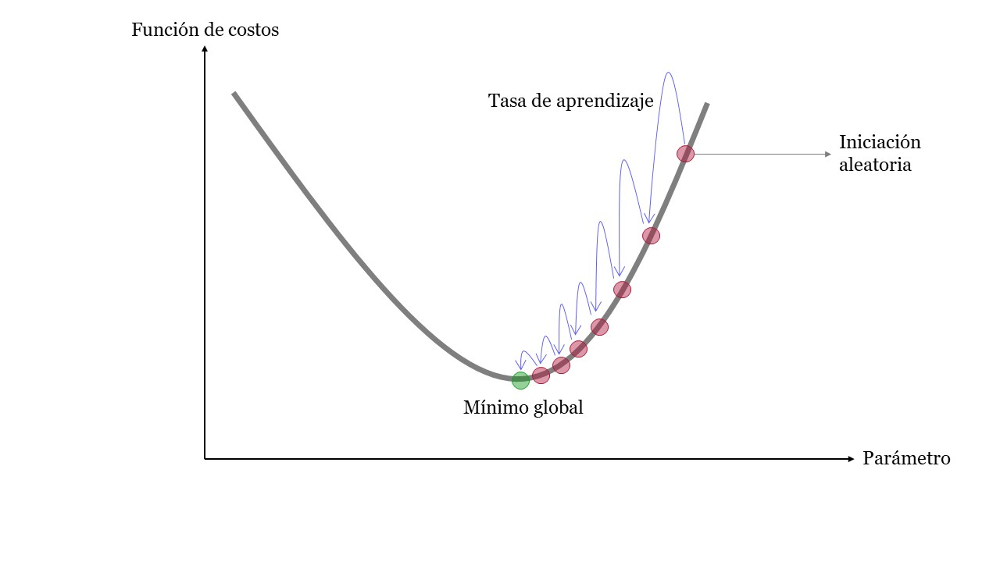
Gradient_Descent¶
Un parámetro importante en Gradient Descent es el tamaño de los pasos, determinado por el hiperparámetro de tasa de aprendizaje. Si la tasa de aprendizaje es demasiado pequeña, el algoritmo tendrá que pasar por muchas iteraciones para converger, lo que llevará mucho tiempo (Figura de la izquierda). Por otro lado, si la tasa de aprendizaje es demasiado alta, es posible que salte al otro lado del valle, posiblemente incluso más alto de lo que estaba antes. Esto podría hacer que el algoritmo diverja, con valores cada vez mayores, y no pueda encontrar una buena solución (Figura de la derecha).
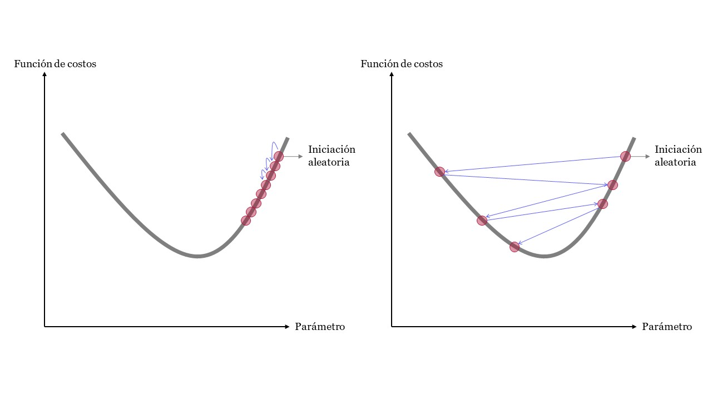
LearningRate¶
El principal desafío para el gradiente descendente está en encontrar el mínimo global en funciones de costos irregulares. Esto hace difícil llegar al mínimo global y el algoritmo podría estancarse en un mínimo local. Por último, en algunos tramos de la función de costo el algoritmo podría tener grandes saltos y en otros pequeños avances.
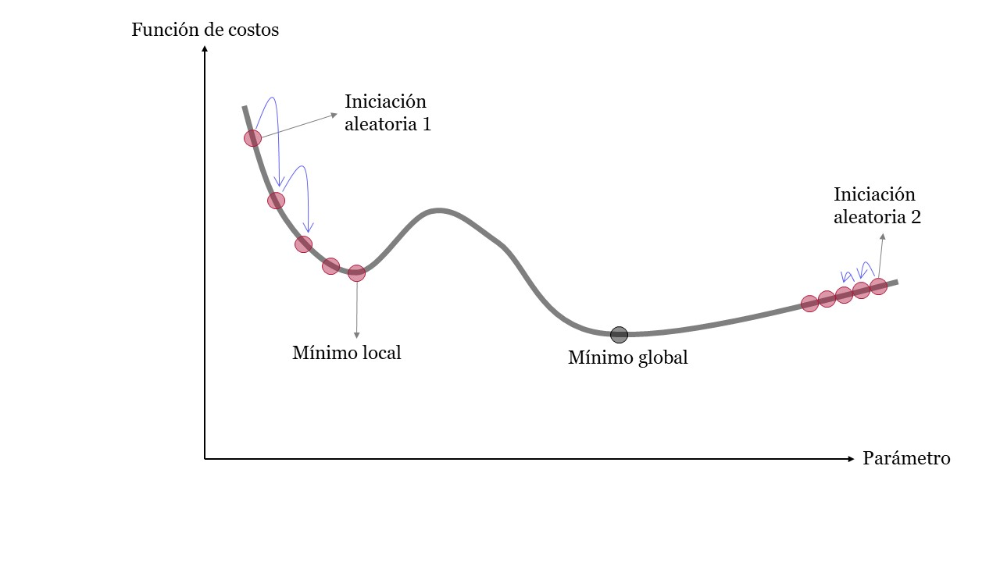
Irregular¶
El mínimo de una función es un punto donde la derivada es 0, por lo que todo lo que se tiene que hacer es encontrar todos los puntos donde la derivada tiende a 0 y verificar cuál de estos puntos de la función tiene el valor más bajo.
Por otro lado, se recomienda que al usar Gradient Descente asegurarse que todas las variables tengan la misma escala. De lo contrario, el algoritmo podría demorarse en converger.
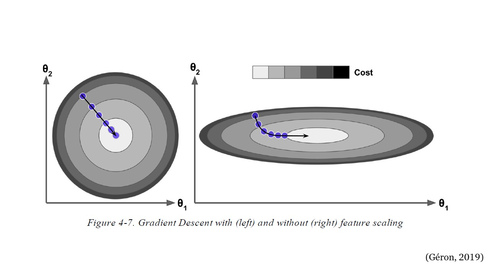
EscalaVariables¶
Modelo de regresión lineal:¶
Donde,
\(W\): es el vector de parámetros a ajustar para estimar \(\hat{y}\). Son los pesos que se deben optimizar.
\(b\): intercepto.
Función de costo:
Donde,
\(m\): cantidad de observaciones en el conjunto de entrenamiento.
Gradiente descendente:¶
Gradient Descent
El gradiente descendente es un algoritmo para optimizar parámetros. El algoritmo calcula la derivada parcial de la función de costo con respecto a cada uno de los parámetros del modelo. Estos parámetros son los pesos \(W\).
Aplicando la Regla de la Cadena:
El gradiente descendente en cada iteración cambia los valores de \(W\) con el objetivo de minimizar la función de costo, MSE.
Gradiente descendente por lotes:¶
Batch Gradient Descent
La fórmula anterior contiene la cantidad de observaciones del conjunto de entrenamiento, \(m\), esto implica que en cada paso del gradiente descendente realiza los cálculos sobre todo el conjunto completo de entrenamiento, es decir, utiliza el lote completo en cada iteración.
Una vez se calcula la derivada parcial, es decir los gradientes para cada variable, el gradiente descendente lo que hace es ir en la dirección opuesta con el fin de ir cuesta a abajo. Esto significa cambiar el signo del gradiente.
En cada iteración los parámetros (\(W\)) son ajustados, este ajuste depende del valor del paso anterior menos la derivada parcial calculada anteriormente multiplicada por la tasa de aprendizaje \(\eta\). Esta tasa de aprendizaje determina el tamaño del paso cuesta abajo, aumenta la velocidad.
Resumen de los pasos:
Para el conjunto de entrenamiento \((X)\), ejecuta el modelo para obtener las predicciones \(\hat{y}\). Esto se conoce como paso hacia adelante - forward pass.
Calcula la función de costo, una medida del desajuste entre \(\hat{y}\) y \(y\).
Calcula el gradiente de la pérdida (función de costos) con respecto a los parámetros del modelo \((W)\). Esto se conoce como paso hacia atrás - backward pass.
Mueve los parámetros un poco en la dirección opuesta del gradiente para reducir un poco la pérdida, por ejemplo, reducir los parámetros esta cantidad \(-\eta\times Gradiente\). El término \(\eta\) es un escalar y es la “velocidad” del proceso del gradiente descendente, se le conoce como tasa de aprendizaje.
Para este método llamado Batch Gradient Descent, se selecciona el conjunto de entrenamiento completo. El método siguiente llamado Stochastic Gradient Descent utiliza en cada cálculo del gradiente una instancia aleatoria. Por último, el método Mini-batch Gradient Descent realiza los cálculos en pequeños conjuntos aleatorios de instancias llamados mini lotes.
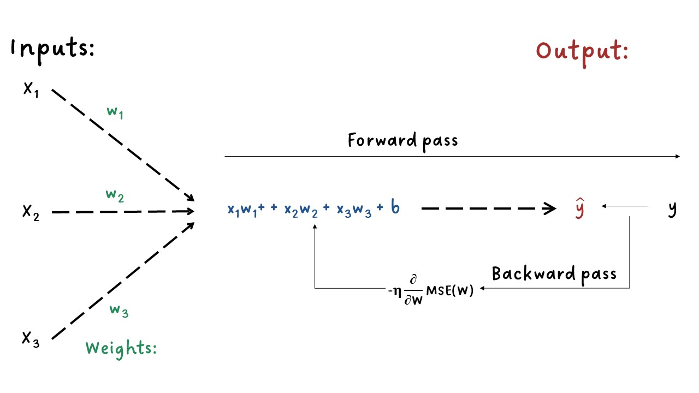
Forward-Backward¶
import numpy as np
import matplotlib.pyplot as plt
m = 100
X = 2 * np.random.rand(m, 1)
y = 4 + 3 * X + np.random.randn(m, 1)
plt.figure(figsize=(8, 6))
plt.plot(X, y, "b.")
plt.title("Conjunto de entrenamiento")
plt.xlabel("X")
plt.ylabel("y");
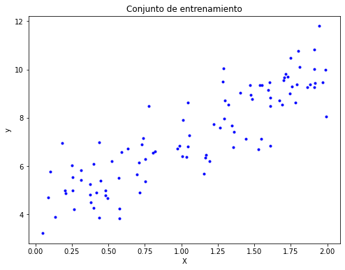
X_b = np.c_[np.ones((100, 1)), X]
X_b[0:5]
array([[1. , 0.3112862 ],
[1. , 0.43886132],
[1. , 1.77981074],
[1. , 0.26377055],
[1. , 0.13377781]])
eta = 0.1 # learning rate
n_iterations = 100
W = np.random.randn(2, 1) # random initialization
for iteration in range(n_iterations):
output = X_b.dot(W)
gradients = 2 / m * X_b.T.dot(output - y)
W = W - eta * gradients
W
array([[4.05544315],
[2.97421683]])
plt.figure(figsize=(8, 6))
plt.plot(X, y, "b.")
plt.plot(X, W[0] + W[1] * X, "r-")
plt.title("Ajuste del modelo")
plt.xlabel("X")
plt.ylabel("y");
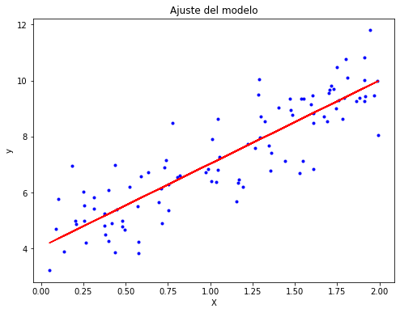
La solución anterior tiene una solución analítica proporcionada por el método de mínimos cuadrados correspondiente a un modelo de regresión lineal:
W_best = np.linalg.inv(X_b.T.dot(X_b)).dot(X_b.T).dot(y)
W_best
array([[4.11246146],
[2.92907782]])
¿Qué pasaría si cambiamos el número de iteraciones y la tasa de aprendizaje?
eta = 0.1 # learning rate
n_iterations = 1000
W = np.random.randn(2, 1) # random initialization
Ws = np.zeros([2, n_iterations]) # variable para almacenar los pesos
for iteration in range(n_iterations):
output = X_b.dot(W)
gradients = 2 / m * X_b.T.dot(output - y)
W = W - eta * gradients
Ws[:, iteration] = W.T # variable para almacenar los pesos
W
array([[4.11246146],
[2.92907782]])
plt.figure(figsize=(8, 6))
plt.scatter(Ws[0, :], Ws[1, :])
plt.plot(Ws[0, :], Ws[1, :])
plt.scatter(W_best[0], W_best[1], marker="*", color="darkgreen", s=200)
plt.title("Evolución de los pesos W en las 1000 iteraciones")
plt.xlabel("$W_1$")
plt.ylabel("$W_2$");
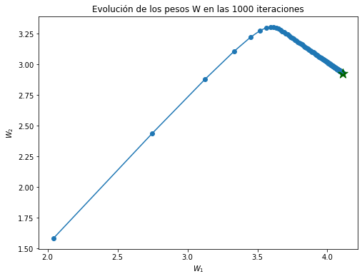
plt.figure(figsize=(8, 6))
plt.plot(X, y, "b.")
plt.plot(X, Ws[0, :] + Ws[1, :] * X, "r-")
plt.title("Evolución del ajuste del modelo en las 100 iteraciones")
plt.xlabel("X")
plt.ylabel("y");

Tasa de aprendizaje pequeña:
eta = 0.005 # learning rate
n_iterations = 1000
W = np.random.randn(2, 1) # random initialization
Ws = np.zeros([2, n_iterations])
for iteration in range(n_iterations):
output = X_b.dot(W)
gradients = 2 / m * X_b.T.dot(output - y)
W = W - eta * gradients
Ws[:, iteration] = W.T
plt.figure(figsize=(8, 6))
plt.scatter(Ws[0, :], Ws[1, :])
plt.plot(Ws[0, :], Ws[1, :])
plt.scatter(W_best[0], W_best[1], marker="*", color="darkgreen", s=200)
plt.title("Evolución de los pesos W en las 50 iteraciones")
plt.xlabel("$W_1$")
plt.ylabel("$W_2$");

plt.figure(figsize=(8, 6))
plt.plot(X, y, "b.")
plt.plot(X, Ws[0, :] + Ws[1, :] * X, "r-")
plt.title("Evolución del ajuste del modelo en las 1000 iteraciones")
plt.xlabel("X")
plt.ylabel("y");
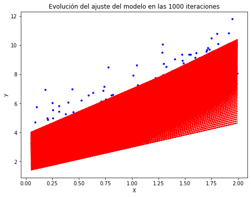
Tasa de aprendizaje grande:
eta = 0.5 # learning rate
n_iterations = 5
W = np.random.randn(2, 1) # random initialization
Ws = np.zeros([2, n_iterations])
for iteration in range(n_iterations):
output = X_b.dot(W)
gradients = 2 / m * X_b.T.dot(output - y)
W = W - eta * gradients
Ws[:, iteration] = W.T
plt.figure(figsize=(8, 6))
plt.scatter(Ws[0, :], Ws[1, :])
plt.plot(Ws[0, :], Ws[1, :])
plt.scatter(W_best[0], W_best[1], marker="*", color="darkgreen", s=200)
plt.title("Evolución de los pesos W en las 5 iteraciones")
plt.xlabel("$W_1$")
plt.ylabel("$W_2$");
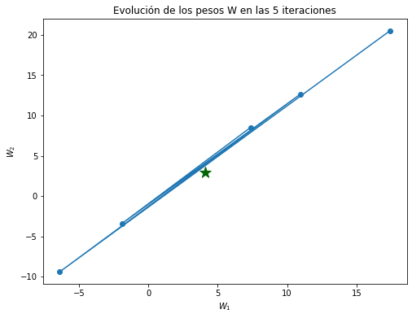
plt.figure(figsize=(8, 6))
plt.plot(X, y, "b.")
plt.plot(X, Ws[0, :] + Ws[1, :] * X, "r-")
plt.title("Evolución del ajuste del modelo en las 5 iteraciones")
plt.xlabel("X")
plt.ylabel("y");
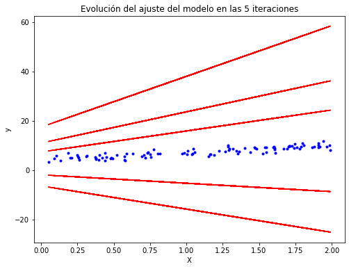
En la anterior figura, el algoritmo diverge, salta por todos lados y, de hecho, se aleja más y más de la solución en cada paso.
Una solución simple es establecer un número muy grande de iteraciones pero interrumpir el algoritmo cuando el vector de gradientes se vuelve pequeño.
Cuando la función de costo es convexa y su pendiente no cambia abruptamente (como es el caso de la función de costo MSE), el gradiente descendente por lotes con una tasa de aprendizaje fija eventualmente convergerá a la solución óptima, pero es posible que tenga que esperar.
Gradiente Descendente Estocástico:¶
Stochastic Gradient Descent - SGD
El principal problema con Batch Gradient Descent es el hecho de que utiliza todo el conjunto de entrenamiento para calcular los gradientes en cada paso, lo que lo hace muy lento cuando el conjunto de entrenamiento es grande. En el extremo opuesto, Stochastic Gradient Descent elige una instancia aleatoria en el conjunto de entrenamiento en cada paso y calcula los gradientes basándose únicamente en esa única instancia.
Trabajar en una sola instancia a la vez hace que el algoritmo sea mucho más rápido porque tiene muy pocos datos para manipular en cada iteración. También hace posible entrenar en grandes conjuntos de entrenamiento, ya que solo una instancia necesita estar en la memoria en cada iteración. Por otro lado, debido a su naturaleza estocástica (es decir, aleatoria), este algoritmo es mucho menos regular que el gradiente descendente por lotes: en lugar de disminuir suavemente hasta llegar al mínimo, rebotará hacia arriba y hacia abajo, disminuyendo solo en promedio. Con el tiempo, terminará muy cerca del mínimo, pero una vez que llegue allí, continuará rebotando, sin asentarse nunca. Entonces, una vez que el algoritmo se detiene, los valores finales de los parámetros son buenos, pero no óptimos.
El término estocástico se refiere al hecho de que cada lote de datos se extrae al azar (estocástico es un sinónimo científico de aleatorio).
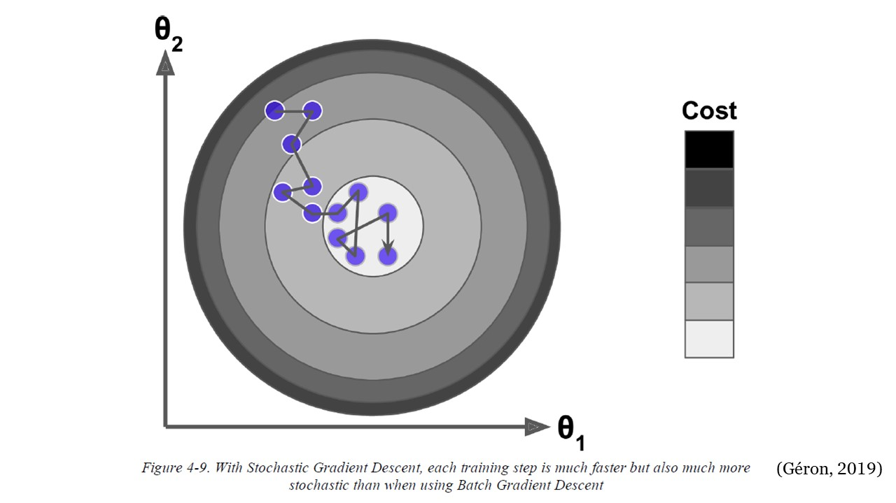
SGD¶
Cuando la función de costo es muy irregular, el Stochastic Gradient Descent puede ayudar al algoritmo a saltar fuera de los mínimos locales, tiene más posibilidades de encontrar el mínimo global que Batch Gradient Descent. Por lo tanto, la aleatoriedad es buena para escapar de los óptimos locales, pero mala porque significa que el algoritmo nunca puede establecerse en el mínimo. Una solución a este dilema es reducir gradualmente la tasa de aprendizaje. Los pasos comienzan grandes (lo que ayuda a progresar rápidamente y escapar de los mínimos locales), luego se vuelven cada vez más pequeños, lo que permite que el algoritmo se asiente en el mínimo global.
La función que determina la tasa de aprendizaje en cada iteración se denomina programa de aprendizaje (learning schedule). Si la tasa de aprendizaje se reduce demasiado rápido, es posible que se quede atascado en un mínimo local o incluso quede congelado a la mitad del mínimo. Si la tasa de aprendizaje se reduce demasiado lenta, puede saltar alrededor del mínimo durante mucho tiempo y terminar con una solución subóptima si detiene el entrenamiento demasiado pronto.
n_iterations = 100
n_epochs = 50
t0, t1 = 5, 50 # learning schedule hyperparameters
def learning_schedule(t):
return t0 / (t + t1)
W = np.random.randn(2, 1) # random initialization
for epoch in range(n_epochs):
for iteration in range(n_iterations):
random_index = np.random.randint(m) # Selecciona un index aleatoriamente
xi = X_b[random_index : random_index + 1] # Selecciona una sola observación o instancia para X
yi = y[random_index : random_index + 1] # Selecciona una sola observación o instancia para y
output = xi.dot(W)
gradients = 2 * xi.T.dot(output - yi)
eta = learning_schedule(epoch * n_iterations + iteration) # Tasa de aprendizaje que cambia
W = W - eta * gradients
W
array([[4.11393184],
[2.91362728]])
En este código las iteraciones se están iterando varias veces
controladas por epoch, es decir, se está iterando por rondas de 100
iteraciones (n_iterations = 100). Cada ronda se llama epoch.
Mientras el código de Batch Gradient Descent iteró 1000 veces a través
del todo el conjunto de entrenamiento, el código del Stochastic Gradient
Descent pasa por el conjunto de entrenamiento 50 veces
(n_epochs = 50) y llega a una buena solución.
# Almacenando la tasa de aprendizaje y los pesos:
n_iterations = 100
n_epochs = 50
t0, t1 = 5, 50 # learning schedule hyperparameters
def learning_schedule(t):
return t0 / (t + t1)
W = np.random.randn(2, 1) # random initialization
Ws = np.zeros([2, n_epochs])
etas = []
for epoch in range(n_epochs):
for iteration in range(n_iterations):
random_index = np.random.randint(m)
xi = X_b[random_index : random_index + 1]
yi = y[random_index : random_index + 1]
output = xi.dot(W)
gradients = 2 * xi.T.dot(output - yi)
eta = learning_schedule(epoch * n_iterations + iteration)
W = W - eta * gradients
Ws[:, epoch] = W.T
etas.append(eta)
plt.plot(range(n_epochs), etas)
plt.scatter(range(n_epochs), etas)
plt.title("Evolución de la tasa de aprendizaje $\eta$")
plt.xlabel("Iteraciones")
plt.ylabel("$\eta$");
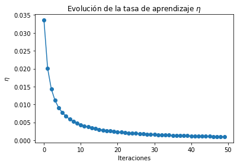
plt.figure(figsize=(8, 6))
plt.scatter(Ws[0, :], Ws[1, :])
plt.plot(Ws[0, :], Ws[1, :])
plt.scatter(W_best[0], W_best[1], marker="*", color="darkgreen", s=200)
plt.scatter(Ws[0, -1], Ws[1, -1], color="darkblue")
plt.title("Evolución de los pesos W en las 50 iteraciones")
plt.xlabel("$W_1$")
plt.ylabel("$W_2$");
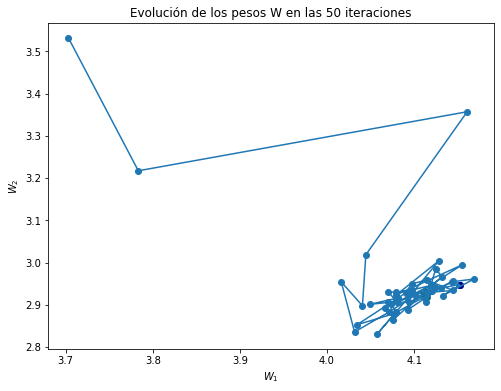
plt.figure(figsize=(8, 6))
plt.plot(X, y, "b.")
plt.plot(X, Ws[0, :] + Ws[1, :] * X, "r-")
plt.title("Evolución del ajuste del modelo en las 510 iteraciones")
plt.xlabel("X")
plt.ylabel("y");
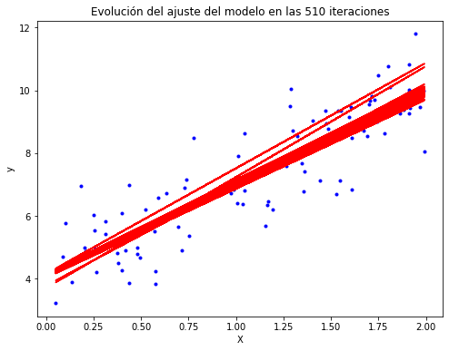
Tenga en cuenta que dado que las instancias se eligen al azar, algunas instancias pueden elegirse varias veces por epoch, mientras que otras pueden no elegirse en absoluto.
Cuando se usa Stochastic Gradient Descent (SGD), las instancias de entrenamiento deben ser independientes e idénticamente distribuidas (IID) para garantizar que los parámetros se acerquen al óptimo global, en promedio. Una forma sencilla de garantizar esto es barajar (shuffle) las instancias durante el entrenamiento (por ejemplo, elegir cada instancia al azar o barajar el conjunto de entrenamiento al comienzo de cada epoch). Si no mezcla las instancias, por ejemplo, si las instancias están ordenadas por etiqueta, entonces SGD comenzará optimizando para una etiqueta, luego la siguiente, y así sucesivamente, y no se establecerá cerca del mínimo global.
Gradiente Descendente de mini lotes:¶
Mini-batch Gradient Descent
En cada paso, en lugar de calcular los gradientes basados en el conjunto de entrenamiento completo (como en Batch GD) o en una sola instancia (como en Stochastic GD), Mini- batch GD calcula los gradientes en pequeños conjuntos aleatorios de instancias llamados mini lotes (Mini-batch).
La principal ventaja de Minibatch GD sobre Stochastic GD es que puede obtener un aumento de rendimiento a partir de la optimización de hardware de las operaciones matriciales, especialmente cuando se utilizan GPU. Como resultado, Minibatch GD terminará caminando un poco más cerca del mínimo que Stochastic GD, pero puede ser más difícil escapar de los mínimos locales.
batch_size: cantidad de instancias a seleccionar para hacer los
cálculos.
batch_size = 5
n_iterations = 100
n_epochs = 50
t0, t1 = 5, 50 # learning schedule hyperparameters
def learning_schedule(t):
return t0 / (t + t1)
W = np.random.randn(2, 1) # random initialization
Ws = np.zeros([2, n_epochs])
etas = []
for epoch in range(n_epochs):
for iteration in range(n_iterations):
random_index = np.random.randint(m - batch_size)
xi = X_b[random_index : random_index + batch_size]
yi = y[random_index : random_index + batch_size]
output = xi.dot(W)
gradients = 2 * xi.T.dot(output - yi)
eta = learning_schedule(epoch * n_iterations + iteration)
W = W - eta * gradients
Ws[:, epoch] = W.T
etas.append(eta)
plt.figure(figsize=(8, 6))
plt.scatter(Ws[0, :], Ws[1, :])
plt.plot(Ws[0, :], Ws[1, :])
plt.scatter(W_best[0], W_best[1], marker="*", color="darkgreen", s=200)
plt.scatter(Ws[0, -1], Ws[1, -1], color="darkblue")
plt.title("Evolución de los pesos W en las 50 iteraciones")
plt.xlabel("$W_1$")
plt.ylabel("$W_2$");
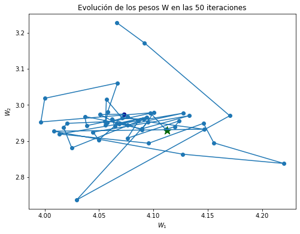
plt.figure(figsize=(8, 6))
plt.plot(X, y, "b.")
plt.plot(X, Ws[0, :] + Ws[1, :] * X, "r-")
plt.title("Evolución del ajuste del modelo en las 510 iteraciones")
plt.xlabel("X")
plt.ylabel("y");

La siguiente figura muestra las rutas tomadas por los tres algoritmos de gradiente descendente en el espacio de parámetros durante el entrenamiento. Todos terminan cerca del mínimo, pero el camino de Batch GD en realidad se detiene en el mínimo, mientras que Stochastic GD y Mini-batch GD continúan caminando. Sin embargo, no olvide que Batch GD toma mucho tiempo para dar cada paso, y Stochastic GD y Mini-batch GD también alcanzarían el mínimo si usara un buen programa de aprendizaje.
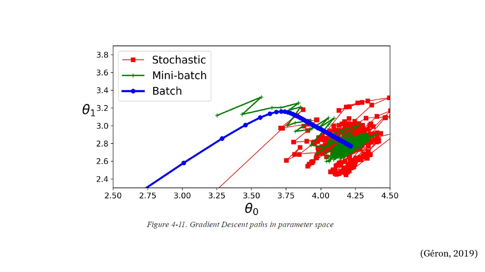
3GD¶
Finalmente, existen múltiples variantes de GD, por ejemplo, GD de momentum, Adagrad, RMSprop, Adam, AdaMax, entre otros. Estas variantes se conocen como métodos de optimización u optimizadores.